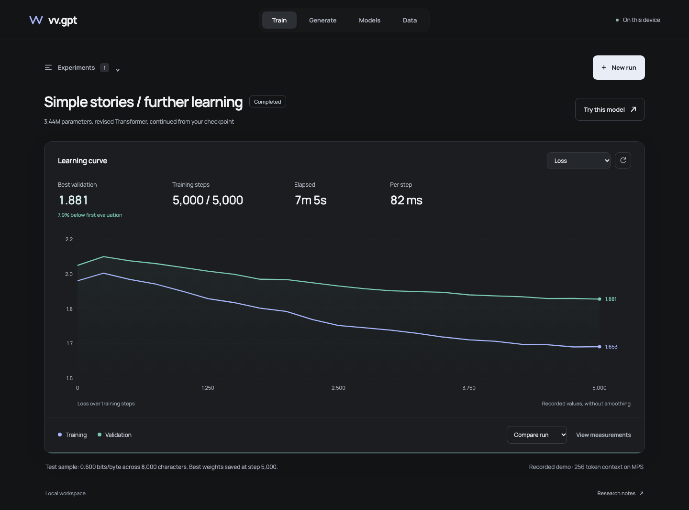

Held-out bits per byte ↓ · bars start at zero
lower prediction loss on this text.
Prediction, repetition and coherent reasoning are different measures. Full samples, limitations and sources are in Research notes ↗.